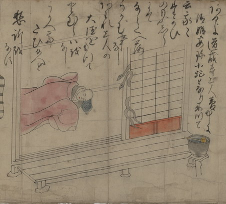

小蛇となった清姫と安珍。障子の隙間から頭部と尾を差し出し、眠っている道成寺の上人の様子をうかがっている。詞書に「あるよ道成寺上人夢中に清姫安珍小蛇となり来つて云我々たかひのもうしうにてならくへ落うかむ事なしあわれ上人の大徳をもつてとむらいをなしうかへてたひ給へと愁訴をなす」とある。
出典：親書誌：U426_nichibunken_0152：道成寺縁起；ドウジョウジエンギ／日付：2010／資源識別子：U426_nichibunken_0152_0011_0000
Copyright (c)2010- International Research Center for Japanese Studies, Kyoto, Japan. All rights reserved.